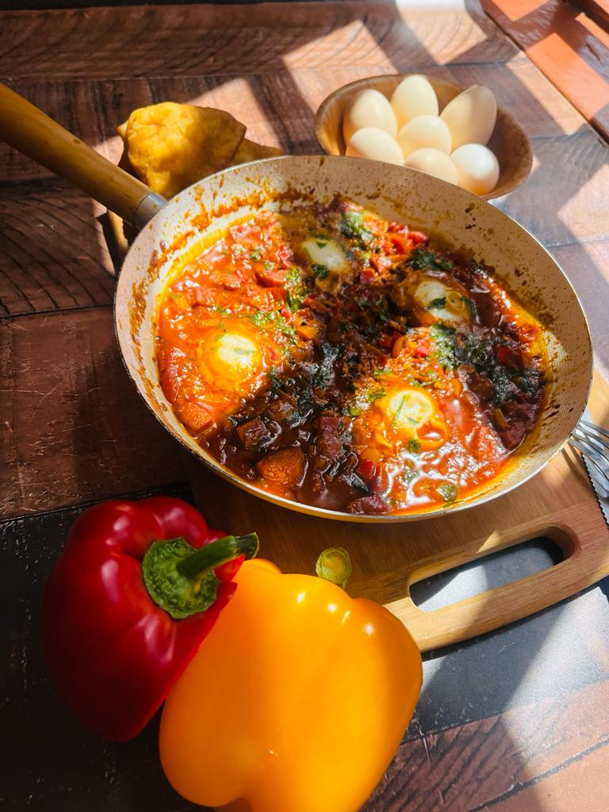

Shakshouka

Shakshouka aka Eggs in pagatory
Ingredients:
a bunch coriander [leaves and stems separated]
1 tablespoon tomato paste
1 teaspoon sugar [to balance off the acidit of the tomato paste]
2 teaspoons spanish paprika
Steps:
Fry the onions, crushed garlic cloves and chopped coriander stems until fragrant
Add in your tomatoes.
When they become soft, add in the spices and tomato paste.
Let that cook down and add in your salt.
Taste it to make sure the sauce is thick and to your liking
Once well adjusted,make wells in the sauce and gently crack eggs into the wells
Add a splash water to make sure the eggs are well poached in the sauce pan and cover to cook in the steam.
Once the eggs are cooked to your liking, add in your coriander leaves and any other garnish you'd desire.
Serve with a side of your choice and Devour.